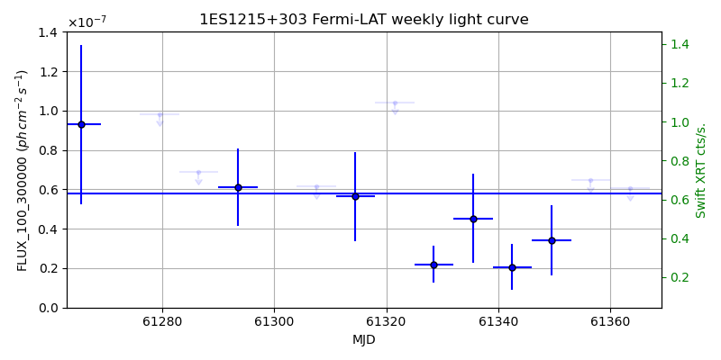
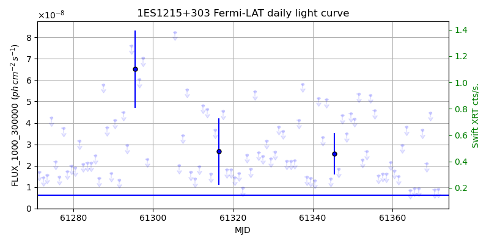
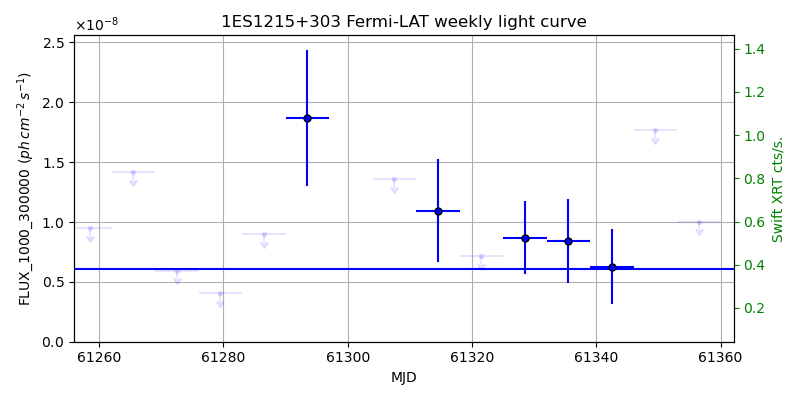

LAT Lightcurve site: https://fermi.gsfc.nasa.gov/ssc/data/access/lat/msl_lc/source/1ES_1215p303
Swift site: https://www.swift.psu.edu/monitoring/source.php?source=1ES1215+303
NED: Query
Time of last update of this page: UT: 2026-11-20 16:24 (MJD: 61364.684)
| Property | Value |
|---|---|
| R.A. | 12:17:52.08 |
| Dec. | 30:07:01.2 |
| z | 0.129 |
| 3FGL SpectrumType | PowerLaw |
| 3FGL PL Index | 1.97 |
| 3FGL Flux_100_300000 | 5.77e-08 1 / (s cm2) |
| 3FGL Flux_1000_300000 | 6.10e-09 1 / (s cm2) |
| 3FGL Flux >200 GeV | 3.46e-11 1 / (s cm2) |
| 3FGL Extrap. Crab >200 GeV | 0.15 |
| 3FGL Flux After EBL Absorption >200GeV | 1.92e-11 1 / (s cm2) |
| 3FGL EBL Crab Fraction >200GeV | 0.08 |
| MJD | dMJD | Flux | dFlux | Frac3FGL | FracCrab>200GeV | EBLFracCrab>200GeV |
|---|---|---|---|---|---|---|
| 61359.50 | 0.50 | 3.33e-07 | 0.00e+00 | 0.00 | 0.00 | 0.00 |
| 61360.50 | 0.50 | 2.63e-07 | 0.00e+00 | 0.00 | 0.00 | 0.00 |
| 61361.50 | 0.50 | 7.17e-08 | 0.00e+00 | 0.00 | 0.00 | 0.00 |
| 61362.50 | 0.50 | 1.46e-07 | 0.00e+00 | 0.00 | 0.00 | 0.00 |
| 61363.50 | 0.50 | 1.28e-07 | 0.00e+00 | 0.00 | 0.00 | 0.00 |

| MJD | dMJD | Flux | dFlux | Frac3FGL | FracCrab>200GeV | EBLFracCrab>200GeV |
|---|---|---|---|---|---|---|
| 61328.50 | 3.50 | 2.20e-08 | 9.31e-09 | 0.38 | 0.06 | 0.03 |
| 61335.50 | 3.50 | 4.53e-08 | 2.25e-08 | 0.79 | 0.12 | 0.07 |
| 61342.50 | 3.50 | 2.06e-08 | 1.15e-08 | 0.36 | 0.05 | 0.03 |
| 61349.50 | 3.50 | 3.42e-08 | 1.76e-08 | 0.59 | 0.09 | 0.05 |
| 61356.50 | 3.50 | 6.45e-08 | 0.00e+00 | 0.00 | 0.00 | 0.00 |

| MJD | dMJD | Flux | dFlux | Frac3FGL | FracCrab>200GeV | EBLFracCrab>200GeV |
|---|---|---|---|---|---|---|
| 61359.50 | 0.50 | 2.17e-08 | 0.00e+00 | 0.00 | 0.00 | 0.00 |
| 61360.50 | 0.50 | 1.77e-08 | 0.00e+00 | 0.00 | 0.00 | 0.00 |
| 61361.50 | 0.50 | 1.49e-08 | 0.00e+00 | 0.00 | 0.00 | 0.00 |
| 61362.50 | 0.50 | 2.97e-08 | 0.00e+00 | 0.00 | 0.00 | 0.00 |
| 61363.50 | 0.50 | 3.82e-08 | 0.00e+00 | 0.00 | 0.00 | 0.00 |

| MJD | dMJD | Flux | dFlux | Frac3FGL | FracCrab>200GeV | EBLFracCrab>200GeV |
|---|---|---|---|---|---|---|
| 61328.50 | 3.50 | 8.68e-09 | 3.05e-09 | 1.42 | 0.21 | 0.12 |
| 61335.50 | 3.50 | 8.40e-09 | 3.51e-09 | 1.38 | 0.20 | 0.11 |
| 61342.50 | 3.50 | 6.28e-09 | 3.13e-09 | 1.03 | 0.15 | 0.08 |
| 61349.50 | 3.50 | 1.77e-08 | 0.00e+00 | 0.00 | 0.00 | 0.00 |
| 61356.50 | 3.50 | 1.00e-08 | 0.00e+00 | 0.00 | 0.00 | 0.00 |
--------------------------------------------------------- Using user-supplied coords: 12:17:52.08 30:07:01.2 2000 --------------------------------------------------------- FLWO UT night of: 2026-11-21 Local Sid. @ Midnight: 03:37 Sunset (-15.0) (local, UT): 18:33 01:33 Sunrise (-15.0) (local, UT): 05:47 12:47 Moonrise (local, UT): Moonset (local, UT): 03:40 10:40 Moon phase: 0.85 --------------------------------------------------------- AzTime LSID UT Obj_el Obj_az Mn_el Mn_az Sep. --------------------------------------------------------- 18:33 22:09 01:33 -21.1 330.0 47.9 117.4 142.5 19:03 22:39 02:03 -23.9 336.4 53.3 125.0 142.4 19:33 23:09 02:33 -26.2 343.1 58.2 134.7 142.2 20:03 23:39 03:03 -27.6 350.2 62.3 146.9 142.1 20:33 00:09 03:33 -28.3 357.6 65.1 162.1 141.9 21:03 00:39 04:03 -28.2 5.0 66.3 179.7 141.8 21:33 01:09 04:33 -27.2 12.3 65.4 197.5 141.6 22:03 01:39 05:03 -25.5 19.3 62.9 213.2 141.5 22:33 02:09 05:33 -23.0 25.9 59.0 225.9 141.3 23:03 02:39 06:03 -19.9 32.0 54.2 235.9 141.2 23:33 03:09 06:33 -16.3 37.7 48.9 243.9 141.1 00:03 03:39 07:03 -12.1 42.9 43.2 250.4 140.9 00:33 04:10 07:33 -7.5 47.6 37.3 255.9 140.8 01:03 04:40 08:03 -1.6 52.0 31.2 260.7 140.6 01:33 05:10 08:33 2.7 55.9 25.1 265.1 140.5 02:03 05:40 09:03 8.0 59.6 19.0 269.2 140.3 02:33 06:10 09:33 13.6 62.9 12.9 273.0 140.2 03:03 06:40 10:03 19.3 66.1 6.8 276.9 140.0 03:33 07:10 10:33 25.2 69.0 1.0 280.7 139.9 04:03 07:40 11:03 31.3 71.8 -4.9 284.7 139.7 04:33 08:10 11:33 37.4 74.5 -11.1 288.8 139.6 05:03 08:40 12:03 43.6 77.1 -16.8 293.2 139.4 05:33 09:10 12:33 49.9 79.7 -22.3 298.1 139.2 05:47 09:25 12:47 52.9 80.9 -24.8 300.5 139.1 --------------------------------------------------------- Dark hours >55 deg.: 0.00